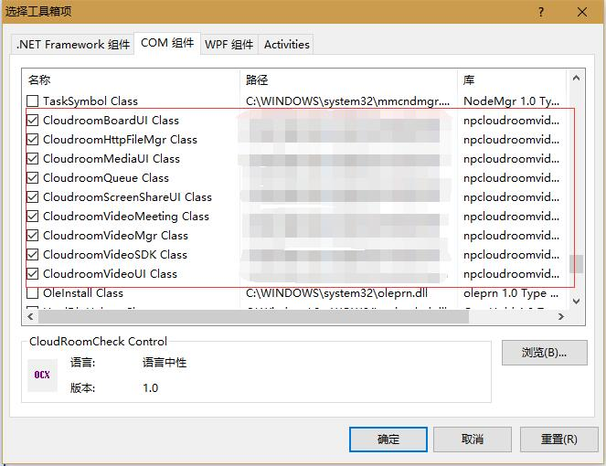
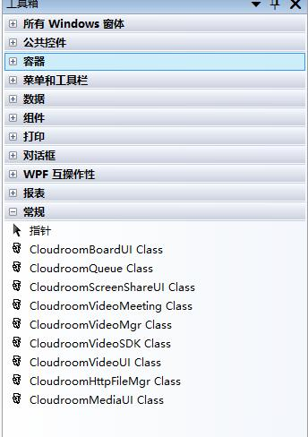
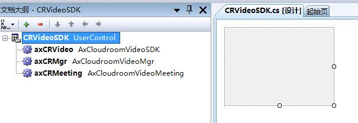
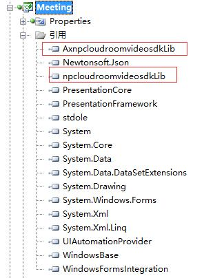
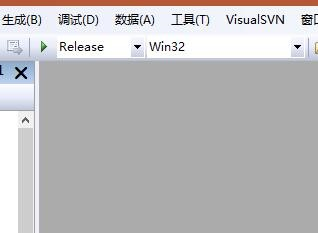

云屋视频SDK参考
Active X插件方式，适合各种Windows客户端开发语言集成。
此文档适用v3.8系列版本的SDK
说明
SDK的安装、开发配置和组件介绍。
SDK安装
SDK开发包内容说明：
|——readme.txt sdk包说明文件 |——doc 开发手册、版本历史文件目录 |——bin sdk及依赖的文件目录 |——setup 打包bin目录下的文件形成的安装包 |——examples 演示程序
运行setup/CloudroomSDK.exe，如果提示要求管理员权限，请选择[允许]。
运行环境要求
- Windows XP (SP2)及以后版本的系统
开发环境配置
适合各种windows桌面客户端开发平台, 如 VC, C#, VB, Qt, C++ Builder, Delphi……
以Visual Studio 2008 C# 开发为例
- 添加组件到Visual Studio工具箱
 
- 拖拽组件到自己项目内的窗体上

打开[引用]，检查组件是否引入成功（如下图）

- 选择解决方案配置[Release]、平台[Win32] 或 [x86]

- 命名引入工程内的SDK组件对象，并访问接口和回调函数
//crvideosdk.cs
using AxnpcloudroomvideosdkLib;
namespace Meeting_WPF
{
public partial class CRVideoSDK : UserControl
{
public AxCloudroomVideoSDK VideoSDK
{
get { return axCRVideo; }
}
public AxCloudroomVideoMeeting Meeting
{
get { return axCRMeeting; }
}
public AxCloudroomVideoMgr Mgr
{
get { return axCRMgr; }
}
}
}
//login.cs
using AxnpcloudroomvideosdkLib;
namespace Meeting_WPF
{
public partial class Login : Window
{
public CRVideoSDK CRVideo = new CRVideoSDK();
private void initMeeting()
{
CRVideo.VideoSDK.init(Environment.CurrentDirectory);
}
private void login()
{
CRVideo.Mgr.login("demo@cloudroom.com", "e10adc3949ba59abbe56e057f20f883e", "Tom", "user000001", "", "");
}
private void initDelegate()
{
CRVideo.Mgr.loginSuccess += new AxnpcloudroomvideosdkLib.ICloudroomVideoMgrEvents_loginSuccessEventHandler(loginSuccess);
CRVideo.Mgr.loginFail += new AxnpcloudroomvideosdkLib.ICloudroomVideoMgrEvents_loginFailEventHandler(loginFailed);
}
}
}
主要组件
SDK是由众多的DLL组件组合而成的，对外提供以下几个组件：
- 基础组件 CloudroomVideoSDK
- 管理组件 CloudroomVideoMgr
- 队列组件 CloudroomQueue
- Http文件管理组件 CloudroomHttpFileMgr
- 视频会议组件 CloudroomVideoMeeting
基础组件CloudroomVideoSDK
CLSID: {07EFD662-A1BB-4d8d-9BEE-F7E43E5FEBF5}
ProgID: npCloudroomVideoSDK.CloudroomVideoSDK
MIME TYPE: application/x-cloudroom-videosdk
CloudroomVideoSDK是基础组件，是整个SDK使用的基础。
该组件一个进程内只能创建一个实例，直到应用退出时才反初始化并销毁。
组件使用过程主要包括：
1. 创建组件实例
2. 执行初始化
3. 程序退出时执行反初始化
管理组件CloudroomVideoMgr
CLSID: {120AD2B0-68F2-46c6-88D8-52173F501C0F}
ProgID: npCloudroomVideoSDK.CloudroomVideoMgr
MIME TYPE: application/x-cloudroom-videomgr
CloudroomVideoMgr是登录、呼叫、会议创建管理和透明传输类。
该组件一个进程内只能创建一个实例，实现了入会前的相关功能。
组件使用过程主要包括：
1. 创建组件实例
2. 登录
3. 创建会议
注意: 只有在CloudroomVideoSDK Init初始化成功后接口才可用。
队列组件CloudroomQueue
CLSID: {9AAD199D-A02F-4513-875D-AA81091E44B9}
ProgID: npCloudroomVideoSDK.CloudroomQueue
MIME TYPE: application/x-cloudroom-queue
CloudroomQueue是队列组件，它实现队列功能。
该组件一个进程内只能创建一个实例，是可选组件，用于用户分发，您可以使用它，也可以自已另外实现，这并不影响视频呼叫、音视频通话功能。
组件使用过程主要包括：
1. 创建组件实例，执行初始化
2. 队列获取，客户排队/座席服务
注意：只有在CloudroomVideoMgr登录成功后接口才可用。
Http文件管理组件CloudroomHttpFileMgr
CLSID: {7E44F8C9-7C8D-4004-8F45-D9819D78663C}
ProgID: npCloudroomVideoSDK.CloudroomHttpFileMgr
MIME: application/x-cloudroom-httpfilemgr
CloudroomHttpFileMgr是Http文件上传下载及文件管理类。
该组件一个进程内只能创建一个实例，主要应用于单方文件归档，单方文件下载，支持非云屋http服务器对接。
如果会议内临时文件共享，请使用CloudroomVideoMeeting中的会议网盘功能。
下载支持断点续传，上传暂不支持断点机制。
注意：只有在CloudroomVideoSDK初始化后接口才可用。
视频会议组件CloudroomVideoMeeting
CLSID: {9E9DD983-A9F8-4dff-B694-B1AE1C708B1E}
ProgID: npCloudroomVideoSDK.CloudroomVideoMeeting
MIME TYPE: application/x-cloudroom-videomeeting
CloudroomVideoMeeting是视频会议类。
该组件一个进程内只能创建一个实例，包含了视频会话相关的全部功能。
组件使用过程主要包括：
1. 创建组件实例
2. 进入会议
3. 会议内的各功能处理
4. 退出会议
注意：只有在CloudroomVideoSDK Init初始化成功后接口才可用。
进入视频会议可用以下组件：
视频显示组件CloudroomVideoUI
CLSID: {8A6BBBDC-C6BE-4a47-92F3-F9581C3FB95E}
ProgID: npCloudroomVideoSDK.CloudroomVideoUI
MIME: application/x-cloudroom-videoui
CloudroomVideoUI是视频显示组件，它显示设定的用户的视频。
该组件可以创建多个实例，然后分别配置大小、位置并设置要显示的用户ID和摄像头ID即可。
注意：只有在CloudroomVideoMeeting入会成功后才能正常工作。
屏幕共享画面显示组件CloudroomScreenShareUI
CLSID: {6FF142C5-8A36-49d7-B627-D60B803550FC}
ProgID: npCloudroomVideoSDK.CloudroomScreenShareUI
MIME: application/x-cloudroom-screenshareui
CloudroomScreenShareUI是屏幕共享显示组件，它用于显示会议内对方共享的屏幕图像。
该组件一个进程内只能创建一个实例，整个程序只能创建一个CloudroomScreenShareUI对象，用来接受显示他人开启共享后传过来的画面, 开启共享的接口是CloudroomVideoMeeting中的接口startScreenShare。
注意：只有在CloudroomVideoMeeting入会成功后才能正常工作。
影音显示组件CloudroomMediaUI
CLSID: {93A618D5-2535-42d0-B72B-95705263F398}
ProgID: npCloudroomVideoSDK.CloudroomMediaUI
MIME: application/x-cloudroom-mediaui
CloudroomMediaUI是影音显示组件，它用于显示自己或者对方会议内播放的影音图像和声音。
该组件一个进程内只能创建一个实例，整个程序只能创建一个CloudroomMediaUI对象，影音控制接口由CloudroomVideoMeeting统一提供。
注意：只有在CloudroomVideoMeeting入会成功后才能正常工作。
白板显示组件CloudroomBoardUI
CLSID: {D9ED4651-4461-458a-99F4-A455977582FF}
ProgID: npCloudroomVideoSDK.CloudroomBoardUI
MIME: application/x-cloudroom-boardui
CloudroomBoardUI是白板显示组件，用于显示会议内自己或他人创建的白板。
该组件一个进程内只能创建一个实例，整个程序只能创建一个CloudroomBoardUI对象，也可以不使用此组件，然后用CloudroomVideoMeeting内白板相关的接口实现个性化的白板功能。